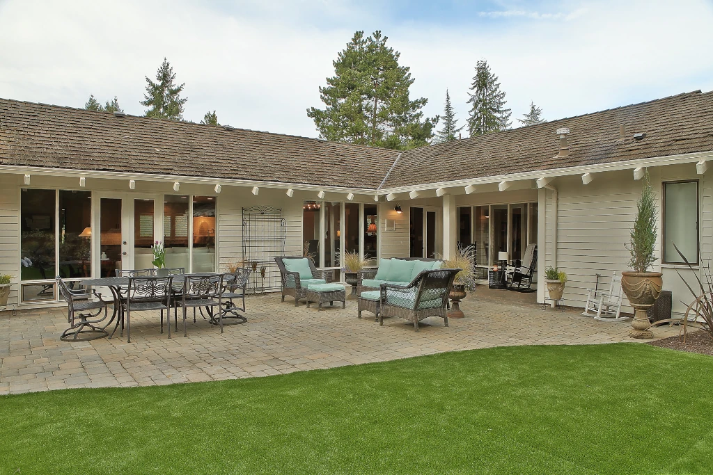
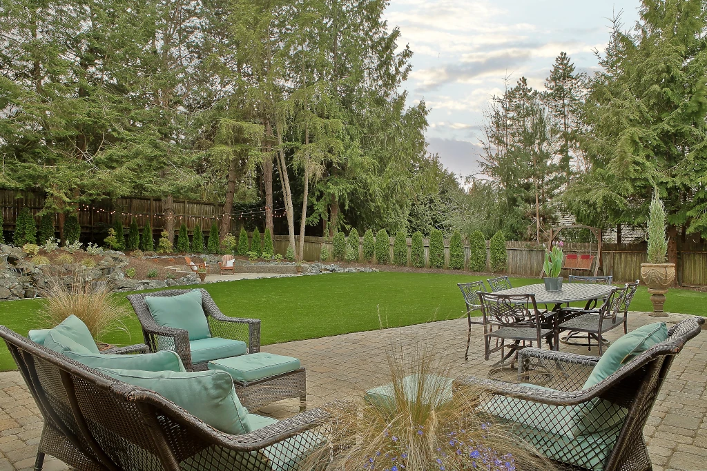
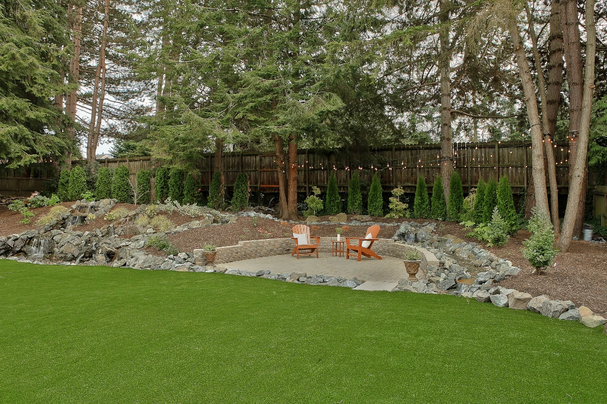
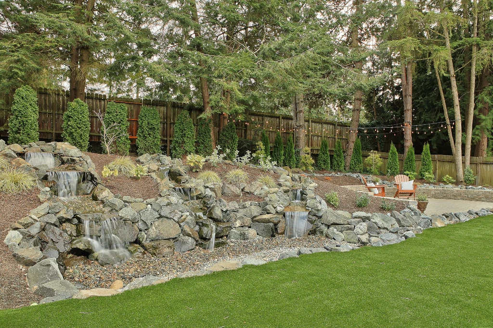

Clyde Hill
Surrounded by large pine trees, this backyard offered the perfect space to create multiple seating areas to enjoy the natural surroundings. Chris created a large custom water feature with a winding stream and stone bridge around a paved seating area. The large turf backyard seamlessly brings together the exterior of the property with the home's open patio and large windows to enjoy views and entertainment from all directions.
turf / waterfall / patio / retaining wall



